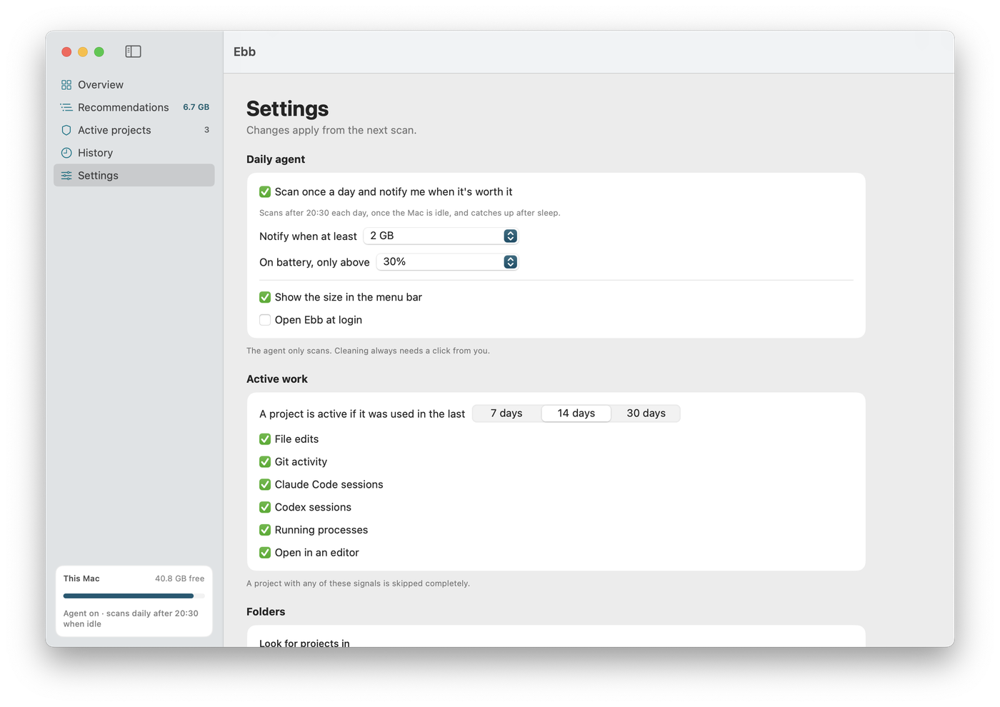

The app
Lives in your menu bar.
Overview, recommendations, the projects it's protecting and every past clean, in one calm window.



Never let your Mac fill up with junk. Ebb clears old node_modules, caches and build files once a day, explains every item, and never touches a project you're working on.
$ curl -fsSL https://ebb.serveka.com/install.sh | sh
macOS 14+ · Apple silicon and Intel · Download the zip · Source on GitHub
This is Ebb's review screen with a sample Mac's leftovers. Untick anything you want to keep, then send the rest out with the tide.
Every item says what it is, whether it comes back, and why it's safe.
If any of these is true in the last 14 days, Ebb skips the whole project. Not one file inside it is suggested.
A source file changed, outside node_modules and build folders.
A commit, checkout, stage or pull moved .git/HEAD or the index.
Claude Code or Codex worked in the folder.
A shell, dev server or claude process sits inside it.
VS Code, Cursor, Windsurf or Xcode had it open.
You chose Always keep. It stays, forever.
Once a day, when your Mac is idle and on power. Read-only: it measures sizes and dates, nothing more.
One notification, only when at least 2 GB can go. “6.2 GB can be cleared safely: 3 inactive node_modules, Docker build cache.”
Review what it found, untick anything, move the rest to the Trash. Each item is checked again first, and History can put it all back.
safe to clear on the Mac Ebb was built on, with 35 active projects left completely alone.
Ebb 0.2 · MacBook Pro · read-only ebb scan in 27 s. Your number depends on what you build.
A built-in never-touch list wins over every category and every rule you write. A test suite checks it before each release.
Scans only read. Cleaning needs your click, and Ebb never empties the Trash.
Open files, recent changes and active projects are re-checked right before anything moves.
Changed in the last 24 hours, or open in an app: left alone.
A build folder git tracks, an unreadable folder, your own zip: skipped.
For pnpm, Docker and Go, Ebb shows the right command instead of guessing.
No telemetry, no account. Read every line on GitHub.
Overview, recommendations, the projects it's protecting and every past clean, in one calm window.

Scripts get JSON. Humans get calm, aligned tables.

Scanning only reads sizes and dates. Cleaning happens only when you click, only moves items to the Trash, and every move is logged so you can put it back. Anything in a project you've touched in the last two weeks is never suggested.
Some of it does, and Ebb says so for every item. It goes after what's left behind by projects you stopped opening, which only comes back if you build them again.
macOS hides parts of ~/Library and some tool folders without it. Ebb still works without access, skips what it can't see, and tells you.
Notarization needs a paid Apple developer membership, which this free project doesn't have yet. The install script downloads with curl, which macOS doesn't flag, and checks the release's checksum and signature. If you download the zip in a browser, right-click Ebb and choose Open the first time.
Those are cleared with the tool's own command, like pnpm store prune. Ebb shows the command and its size, and leaves running it to you.
curl -fsSL https://ebb.serveka.com/install.sh | sh -s -- --uninstall removes the app, the commands and the daily agent. Add --purge for settings and history too.
One command. Nothing changes until you say so.
$ curl -fsSL https://ebb.serveka.com/install.sh | sh